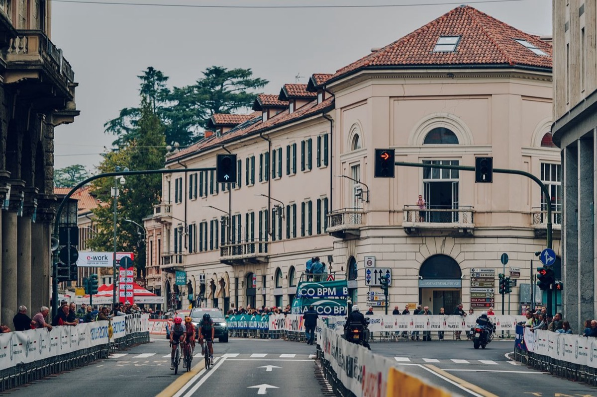

Nel 2008 la Società Binda ha organizzato i Mondiali di ciclismo su strada proprio qui a Varese.
Tappa di 5Stage of 5
Devi sapere che…Did you know…
In 2008 Società Binda organised the Road Cycling World Championships right here in Varese.

C'eri?Were you there?
Allora hai visto la storia da vicino! 🙂Then you saw history up close! 🙂
Poco male: quest'anno sei qui 😉No worries: this year you're here 😉
Quanti anni avevi?How old were you?
Chi ha vinto quell'edizione?Who won that edition?
L'edizione fu vinta dall'italiano Alessandro Ballan, che chiuse la gara in 6h37'30". Il percorso era lungo 260 km.That edition was won by Italy's Alessandro Ballan, who finished the race in 6h37'30". The course was 260 km long.
Grande, sei arrivato all'ultimo indizio :)Great, you've reached the last clue :)
Indizio per la tappa 5Clue for stage 5
Tra pochi passi sarai al traguardo, non darti per vinto, aguzza lo sguardo: cerca il civico cinque con attenzione, di fronte a lui c'è la soluzione!A few more steps and the finish is near, don't give up now, keep your eyes clear: look for house number five with care, right in front of it, the answer's there!